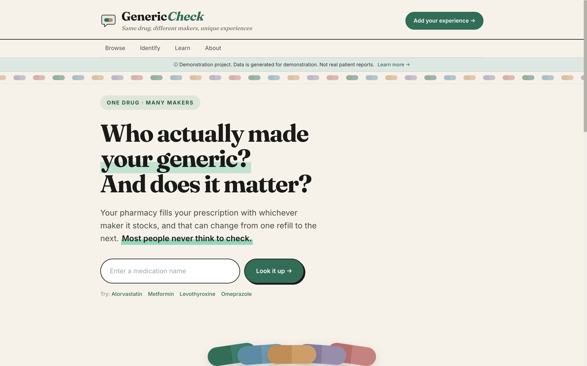
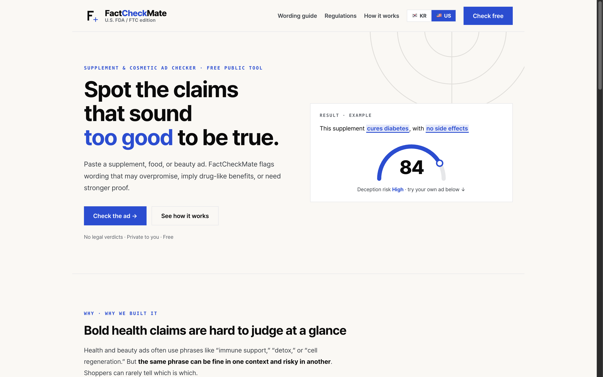
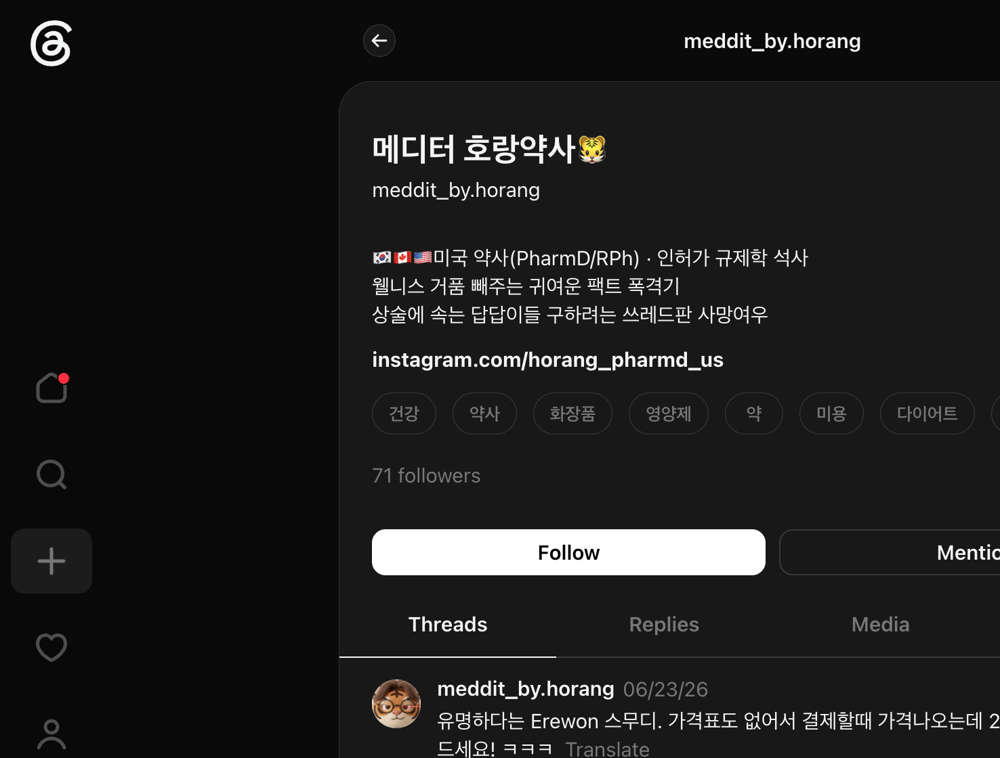

Bilingual (English/Korean). I dig into operations, process gaps, and regulatory data to find improvement opportunities — then I build the solution myself.
Two live regulatory-tech products shipped end to end. Evidence contributed to an FDA compounding-list decision. One independent pharmacy turned from operating loss to profit.
Built independently, end to end: regulatory framing, data model, AI-assisted development, deployment. Click any screenshot to enlarge.
A patient-facing registry that answers a question routine substitution hides: which manufacturer actually made your generic, and how do patient experiences differ between them?

Checks dietary-supplement and cosmetic advertising claims against both U.S. (FDA/FTC) and South Korean advertising standards — phrase by phrase. Built after finding no accessible consumer tool existed.

A LangGraph multi-agent pipeline that generates evidence-based wellness fact-check content for Korean audiences, applying US + Korean regulatory literacy to real supplement-claim cases.

Originated and led a 4-person team developing a Braille-overlay auxiliary prescription label concept for visually-impaired patients, presented at the FDA Office of Regulatory Science and Innovation.
See the winners on FDA.govIndustry, research, and clinical practice — connected by one thread: turning evidence and process gaps into decisions and systems.
High-throughput centralized pre-label verification (400+ prescriptions/day) for retail pharmacies across CA and WA, with exposure to specialty medications and injectables.
Sustained high-volume coverage (~60 hrs/week) across two pharmacies; verified prescriptions via ePIMS and resolved clinical questions through EPIC chart review and provider drug-information support.
Ran a feasibility analysis weighing clinical and pharmacoeconomic evidence on MRD testing; drafted the background, objectives, and methodology sections of the IRB research proposal.
MS coursework: IND/NDA/ANDA/BLA submissions, eCTD, clinical study design, ICH-GCP & IB development, IRB, CMC, pharmacovigilance & post-marketing surveillance.
Transferred to the University of Maryland, Baltimore.
I'm looking for roles where regulatory depth meets building — life sciences consulting, health tech, medical affairs, and drug safety. If that sounds like your team, I'd love to hear from you.